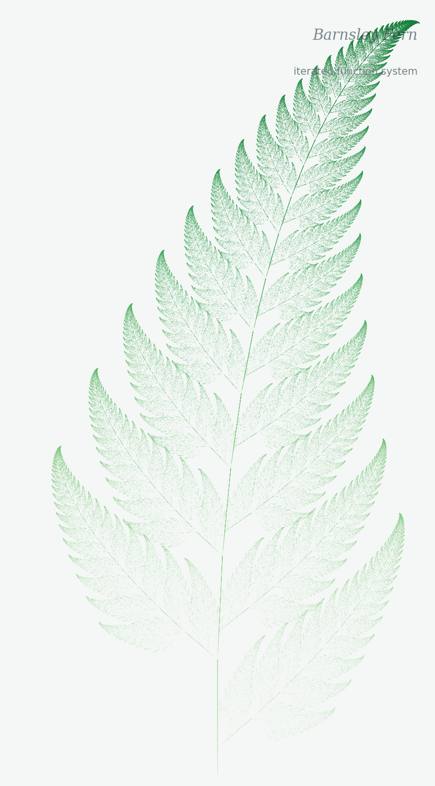

I carry a conviction to write these studies and a compassion for people who are still lost inside religion, ritual, and mainstream Christianity, because I was there too, trusting the flannelgraph and the museum wall while something in my chest said the picture did not match the text.
Why I started writing these studies
I did not wake up one morning wanting to redraw Noah's boat, because I was simply trying to read Genesis with a sincere heart and every picture I had been given looked wrong before I could explain why, whether it was a ship with a bow, a temple like a stone shoebox, or a city like a cold cube dropping from heaven, and something in me kept whispering that it was not what Moses or John measured.
When I walked outside I would see a sunflower head turned toward the light, a pinecone on the path, a fern uncurling in the damp, and I am not a botanist but a man who reads his Bible and looks at the world God actually made, where what I kept seeing was not flat walls and sharp corners but curve, spiral, circumference, and breath, form that does something and carries purpose inside it.
That is what I mean when I say structures have soul, not that they are alive like a person but that the design is not random, because a pinecone opens and closes because its angles solve a problem and a fern grows the way it grows because that is how you unfold without tearing yourself apart, and if the Maker does that in a plant He calls good then His ark should not be a hull Genesis never mentions, His tabernacle should not be a flat tent box when Exodus hides pi in the curtains, and His city at the end of Revelation should not look like a warehouse in the sky.
These studies are my attempt to set out what I found for people who are searching, without copying someone else's essay, though I owe a debt to researchers at renformation.com (Project Arc) and to Project314.org for the tabernacle work, and each study below begins with the popular diagram from every flannelgraph and museum wall and then walks through the text, the numbers, and what I believe Scripture is showing us.
What He already made
Holy geometry is not theory to me
I put these three images here as witnesses to what I have already seen with my eyes, because when I write about circumference and dome and pi I am not pulling words from nowhere but naming what creation has been declaring all along.

Sunflower
The seeds spiral because that packing works, and I see circumference and ratio in the head before I ever open a commentary.

Pinecone
The scales are arranged so the cone breathes and holds, and nature does not need a lecture to use pi.

Fern
The fiddlehead uncurls in a spiral with minimum tearing and maximum reach, which is intelligence written into form.
Studies
The familiar picture and what Scripture may be saying
Each piece below opens with the traditional drawing, then walks through where I believe it fails the text, and then through the alternative reading, with the hope that it helps someone still searching to see what the apostles and prophets were pointing toward all along.
I am grateful to Project Arc / Renformation for work that sharpened my thinking on ark, temple, and city. Tabernacle pi belongs to Project314.org and Andrew Hoy. I cite them. I do not pretend their conclusions are mine alone.